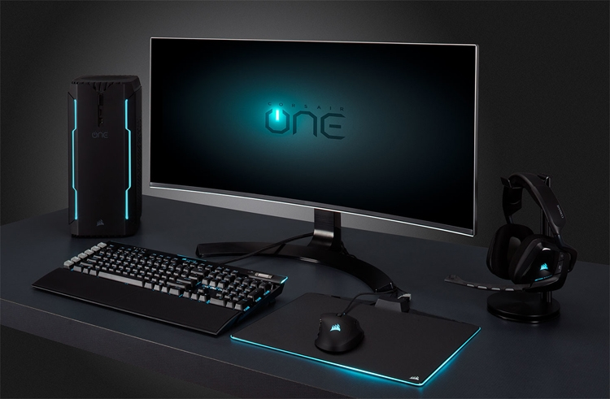
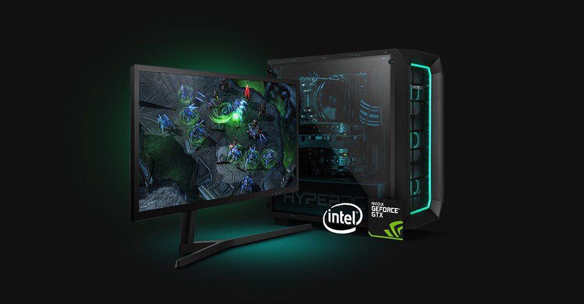
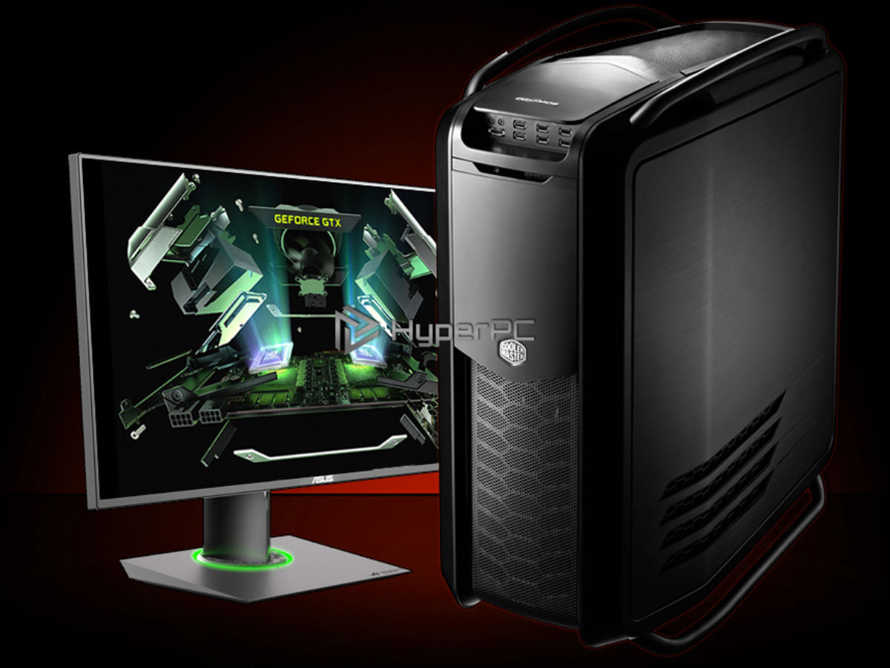

Welcome
1 I have 2 ethernet eth0 and eth1 on my server.The default gateway is set to be eth0. I need to connect ip 10.10.6.2 using fsockopen in php. The ip 10.10.6.2 is routed through eth 1 (I have a rule set on riute-eth 1). When I try to pring that ip from system I am able to get a response. But when I try to frockopen that IP from php I am getting timeout error. I have also enabled allow_url_fopen from php.iui
Favorite photos


